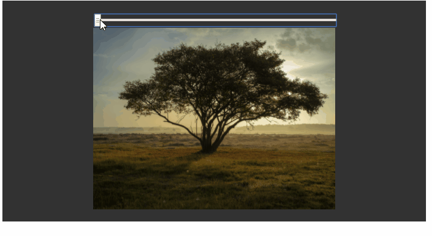

Bu sayfada Bootstrap 5 ile range yapısının ne olduğunu, ne işe yaradığını, özelliklerini ve benzer yapılar ile kıyaslamasını sizlere aktaracağım.
Bu range yapısı basit bir kaydırma çubuğu ile akıcı bir input nesnesidir. Custom Range ile değerleri istediğiniz şekilde manuel değişitirebilirsiniz. Bu range yapısının özelliği ise bir sınırın olmaması. Belli iki değer arasında istediğiniz değeri verebilirsiniz.
Costum range input yapısını aşağıdaki kod yapısı ile oluşturdum;
Örnek olarak aşağıda göreceğiniz şekilde range input yapısı ile değer değiştirerek resmi döndürebilirsiniz.
Varsayılan olarak, her numara arasındaki aralık 1'dir. step niteliğini kullanarak bunu değiştirebilirsiniz.
step input yapısını aşağıdaki kod yapısı ile oluşturdum;
Varsayılan olarak minimum değer 0 ve maksimum değer 100'dür. Min ve max değerini değiştirmek için kullanabilirsiniz.
Min ve Max input yapısını aşağıdaki kod yapısı ile oluşturdum;
Adı üzerinde fiyat aralığı belirlemeye yarayan Price Range yapısı genellikle alışveriş sitelerinde fiyat filtrelemeye yarar.
Price range input yapısını aşağıdaki kod yapısı ile oluşturdum;